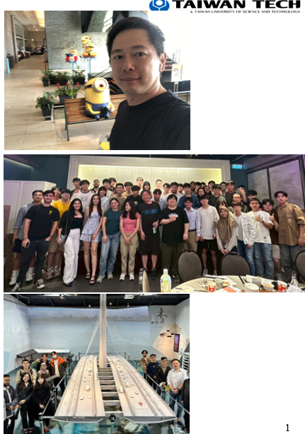
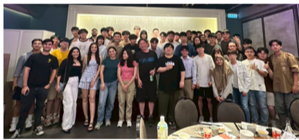
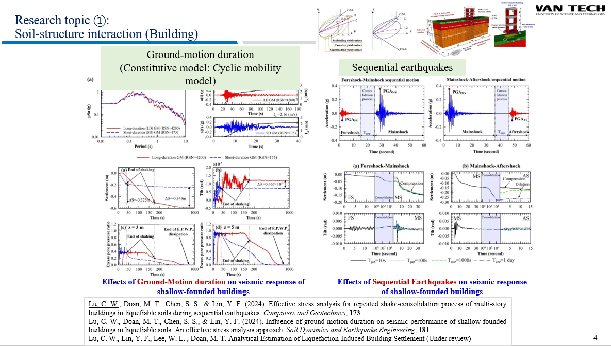
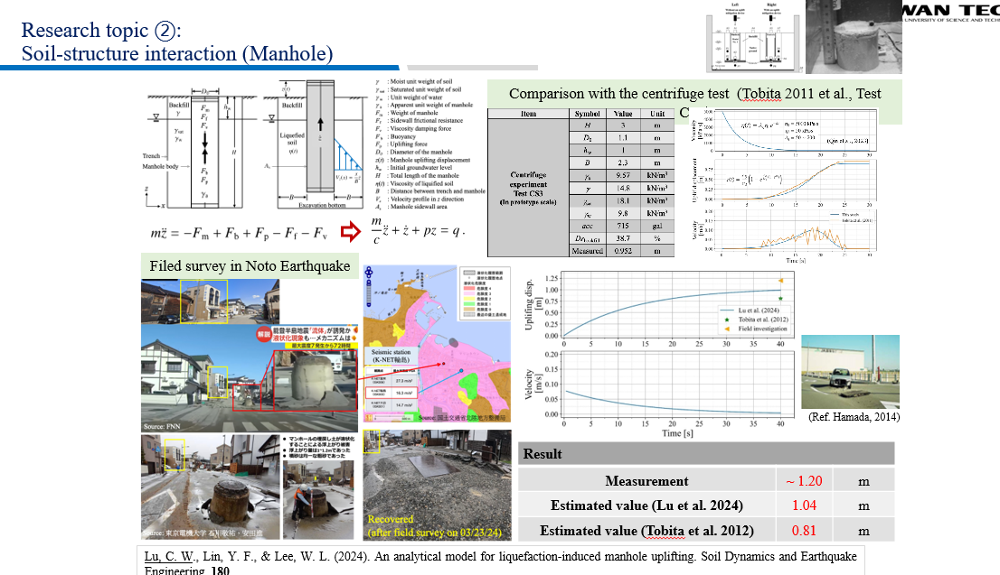
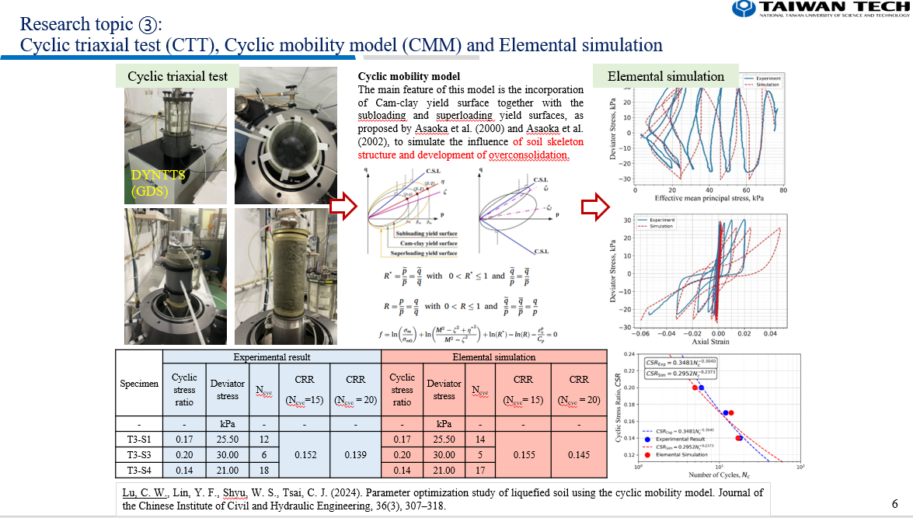
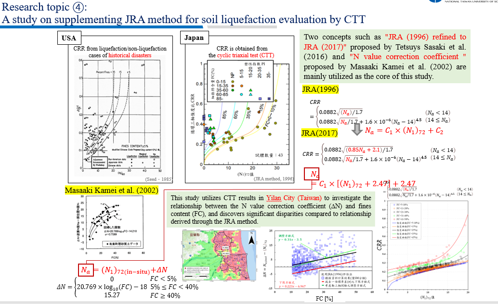
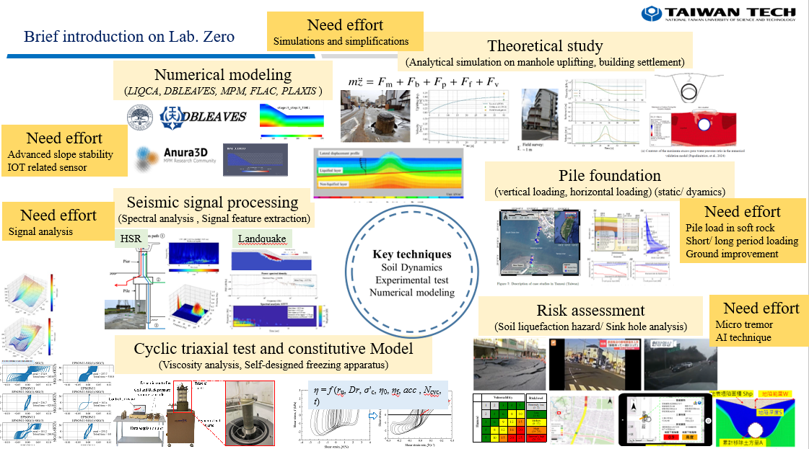

From soil failure to urban resilience.
LABZero is a geotechnical earthquake engineering laboratory at National Taiwan University of Science and Technology, dedicated to soil liquefaction, soil–structure interaction, cyclic testing, numerical simulation, seismic signal processing, and risk-informed mitigation of geo-hazards.

Prof. Chih-Wei Lu｜LABZero Founder
Soil dynamics, liquefaction engineering, numerical modeling, and geo-hazard mitigation with international collaboration and real engineering impact.
Led by Prof. Chih-Wei Lu
Professor, Division of Geotechnical Engineering, Department of Civil and Construction Engineering, National Taiwan University of Science and Technology.
Kyoto University Ph.D.
Prof. Lu’s major fields include soil dynamics, soil liquefaction, liquefaction mitigation, three-dimensional effective stress analysis, and pile–soil–superstructure interaction.
Education with real projects
Courses include Soil Dynamics and Integrated Design Practice for Civil Engineering, linking fundamentals, computation, field cases, and design thinking.
LABZero at NTUST
E2-409｜cwlu@mail.ntust.edu.tw｜+886-2-2737-6563
Taipei, Taiwan

We do not only analyze hazards. We translate science into decisions.
LABZero connects laboratory testing, theoretical modeling, numerical simulation, seismic signal interpretation, and municipal-scale risk evaluation to support safer infrastructure and more resilient cities.
Mission with social credibility
LABZero was founded to solve geotechnical problems both theoretically and practically, disseminate techniques to those in need worldwide, expand members’ geotechnical knowledge, integrate geo-brains for society, and strengthen the credibility of geotechnical engineers.
Theory × Practice
Every research question is expected to move between analytical thinking, laboratory or field evidence, and practical engineering decision-making.
World-wide impact
LABZero aims to prevail its techniques to engineers, agencies, and researchers who need advanced geo-hazard assessment and mitigation tools.
Geo-brains for society
The laboratory integrates local and international perspectives to turn soil dynamics, liquefaction engineering, and risk analysis into social value.
Core values that build a research culture
Responsibility, attitude, hard and smart working, teamwork, leadership, followership, creativity, and a clear bonus system define how LABZero trains researchers.
Responsibility
Members are trained to own their research progress, project contribution, weekly communication, and academic discipline.
Teamwork
International and local students work tightly and harmonically, transforming the laboratory into a cross-cultural research platform.
Leadership
Every member learns to be both a leader and a follower—able to initiate, support, coordinate, and complete high-quality work.
Five flagship research pillars
Built from the LABZero introduction and recent publication portfolio.
Building–soil interaction

Effective stress analysis of shallow-founded buildings in liquefiable soils under long-duration and sequential earthquakes.
Manhole and pipeline uplift

Analytical models for liquefaction-induced uplift using variable viscosity and thixotropic-fluid concepts.
CTT and cyclic mobility

Cyclic triaxial testing, model calibration, and elemental simulation for liquefaction behavior.
Liquefaction evaluation

Supplementing JRA-style simplified methods with cyclic testing and Taiwan-specific geological evidence.
Lattice-shaped improvement

Grid-type improved walls, shear stress reduction, replacement ratio, and design-oriented simplified assessment.
Research figures and laboratory evidence
Selected figures from the LABZero presentation add visual authority: laboratory equipment, field reconnaissance, numerical models, cyclic response, and liquefaction mitigation design concepts.

International research community
LABZero connects Taiwan Tech students, international visitors, and collaborators through seminars, field learning, and research exchange.

Cyclic triaxial testing
Dynamic soil testing supports liquefaction resistance interpretation and constitutive model calibration.

Lattice-shaped improvement
Grid-type soil-cement walls restrict shear deformation and reduce excess pore-water pressure generation.

Numerical simulation
Effective-stress analysis and deformation prediction translate mechanisms into engineering decisions.

Field reconnaissance
Field evidence closes the loop between theory, testing, simulation, and observed ground behavior.

Risk mapping
Urban geo-hazard assessment integrates boring data, infrastructure exposure, geologic conditions, and decision support.

Cyclic soil response
Stress–strain and effective-stress path interpretation reveals cyclic mobility and liquefaction deformation behavior.

Municipal-scale resilience
LABZero research moves from soil elements to city-scale liquefaction hazard mapping and asset risk evaluation.
Current project portfolio
From city-scale liquefaction investigation to advanced numerical modeling and early-warning indicators.
Selected recent publications
A research portfolio spanning Computers and Geotechnics, Soil Dynamics and Earthquake Engineering, KSCE Journal of Civil Engineering, Advances in Civil Engineering, and other SCI/EI outlets.
Computers and Geotechnics, 2026
Arabian Journal of Geosciences, 2026
KSCE Journal of Civil Engineering, 2025
Soil Dynamics and Earthquake Engineering, 2025
Soil Dynamics and Earthquake Engineering, 2024
Research capabilities
LABZero’s identity is the integration of field evidence, laboratory testing, theory, and decision support.
Laboratory testing
- Cyclic triaxial testing
- Constitutive model calibration
- Soil liquefaction resistance interpretation
Numerical modeling
- LIQCA, DBLEAVES, FLAC, PLAXIS, MPM
- 3D effective stress analysis
- Pile–soil–superstructure interaction
Risk intelligence
- Liquefaction hazard mapping
- Sinkhole and subsidence analysis
- Seismic signal processing and feature extraction
From two students to an international research platform
LABZero opened in August 2020 with only two students. Its first support from the Soil and Water Conservation Bureau became the starting point for rapid growth, larger research funding, international visitors, field trips, and a strong alumni culture.
Started from Zero
The name LABZero reflects a philosophy: begin from zero, build discipline, and turn small beginnings into world-class research capacity.
Global research family
LABZero has hosted international students, Kyoto University visitors, field trips, farewell gatherings, monthly meetings, and research activities that continue beyond graduation.
Once LABZero, always LABZero
Graduated members remain part of the laboratory identity. Their names, contributions, and spirit are remembered by junior students.
Join LABZero. Build research that matters.
We welcome disciplined, curious, and team-oriented students and collaborators who want to transform geotechnical earthquake engineering into practical resilience solutions.